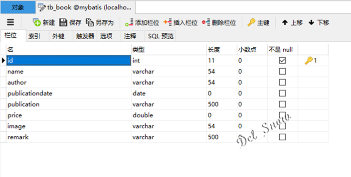

概述
前文记录了Spring MVC的常用功能和MyBatis的基本用法。在实际的项目开发中，需要进行整合，从而使用Spring的依赖注入来减少代码的耦合，使用Spring MVC处理请求并作出响应，使用MyBatis完成数据库操作。
数据准备
在前文创建的mybatis数据库中删除表tb_user重新创建该表，同时新建一张表tb_book，表设计和测试数据如下：

创建/配置项目
创建项目的步骤此处不再赘述，与SpringMVC创建相同（前文链接https://www.cnblogs.com/Dcl-Snow/p/11444751.html）。
项目目录结构如图：
打开项目的pom文件，添加Spring、Spring MVC、Mybatis和连接MySQL数据库的包依赖：
1 <?xml version="1.0" encoding="UTF-8"?>
2
3 <project xmlns="http://maven.apache.org/POM/4.0.0" xmlns:xsi="http://www.w3.org/2001/XMLSchema-instance"
4 xsi:schemaLocation="http://maven.apache.org/POM/4.0.0 http://maven.apache.org/xsd/maven-4.0.0.xsd">
5 <modelVersion>4.0.0</modelVersion>
6
7 <groupId>com.snow</groupId>
8 <artifactId>ssmbookproject</artifactId>
9 <version>1.0-SNAPSHOT</version>
10 <packaging>war</packaging>
11
12 <name>ssmbookproject Maven Webapp</name>
13 <!-- FIXME change it to the project's website -->
14 <url>http://www.example.com</url>
15
16 <properties>
17 <project.build.sourceEncoding>UTF-8</project.build.sourceEncoding>
18 <maven.compiler.source>1.7</maven.compiler.source>
19 <maven.compiler.target>1.7</maven.compiler.target>
20 <!-- spring版本号 -->
21 <spring.version>4.3.10.RELEASE</spring.version>
22 <!-- mybatis版本号 -->
23 <mybatis.version>3.4.6</mybatis.version>
24 </properties>
25
26 <dependencies>
27 <dependency>
28 <groupId>junit</groupId>
29 <artifactId>junit</artifactId>
30 <version>4.11</version>
31 <scope>test</scope>
32 </dependency>
33 <!-- 数据库 -->
34 <dependency>
35 <groupId>mysql</groupId>
36 <artifactId>mysql-connector-java</artifactId>
37 <version>5.1.37</version>
38 <scope>runtime</scope>
39 </dependency>
40 <dependency>
41 <!--jdbc连接池-->
42 <groupId>c3p0</groupId>
43 <artifactId>c3p0</artifactId>
44 <version>0.9.1.2</version>
45 </dependency>
46 <!-- DAO: MyBatis -->
47 <dependency>
48 <groupId>org.mybatis</groupId>
49 <artifactId>mybatis</artifactId>
50 <version>3.3.0</version>
51 </dependency>
52 <dependency>
53 <groupId>org.mybatis</groupId>
54 <artifactId>mybatis-spring</artifactId>
55 <version>1.2.3</version>
56 </dependency>
57 <!-- Servlet web -->
58 <dependency>
59 <groupId>taglibs</groupId>
60 <artifactId>standard</artifactId>
61 <version>1.1.2</version>
62 </dependency>
63 <dependency>
64 <groupId>jstl</groupId>
65 <artifactId>jstl</artifactId>
66 <version>1.2</version>
67 </dependency>
68 <!--Gson-->
69 <dependency>
70 <groupId>com.google.code.gson</groupId>
71 <artifactId>gson</artifactId>
72 <version>2.8.2</version>
73 </dependency>
74 <dependency>
75 <groupId>javax.servlet</groupId>
76 <artifactId>javax.servlet-api</artifactId>
77 <version>3.1.0</version>
78 </dependency>
79 <dependency>
80 <groupId>org.springframework</groupId>
81 <artifactId>spring-core</artifactId>
82 <version>${spring.version}</version>
83 </dependency>
84 <dependency>
85 <groupId>org.springframework</groupId>
86 <artifactId>spring-beans</artifactId>
87 <version>${spring.version}</version>
88 </dependency>
89 <dependency>
90 <groupId>org.springframework</groupId>
91 <artifactId>spring-context</artifactId>
92 <version>${spring.version}</version>
93 </dependency>
94 <dependency>
95 <groupId>org.springframework</groupId>
96 <artifactId>spring-jdbc</artifactId>
97 <version>${spring.version}</version>
98 </dependency>
99 <dependency>
100 <groupId>org.springframework</groupId>
101 <artifactId>spring-tx</artifactId>
102 <version>${spring.version}</version>
103 </dependency>
104 <dependency>
105 <groupId>org.springframework</groupId>
106 <artifactId>spring-web</artifactId>
107 <version>${spring.version}</version>
108 </dependency>
109 <dependency>
110 <groupId>org.springframework</groupId>
111 <artifactId>spring-webmvc</artifactId>
112 <version>${spring.version}</version>
113 </dependency>
114 <dependency>
115 <groupId>org.springframework</groupId>
116 <artifactId>spring-test</artifactId>
117 <version>${spring.version}</version>
118 </dependency>
119 <dependency>
120 <groupId>org.projectlombok</groupId>
121 <artifactId>lombok</artifactId>
122 <version>1.16.22</version>
123 </dependency>
124 </dependencies>
125
126 <build>
127 <finalName>bookproj</finalName>
128 <pluginManagement><!-- lock down plugins versions to avoid using Maven defaults (may be moved to parent pom) -->
129 <plugins>
130 <plugin>
131 <artifactId>maven-clean-plugin</artifactId>
132 <version>3.1.0</version>
133 </plugin>
134 <!-- see http://maven.apache.org/ref/current/maven-core/default-bindings.html#Plugin_bindings_for_war_packaging -->
135 <plugin>
136 <artifactId>maven-resources-plugin</artifactId>
137 <version>3.0.2</version>
138 </plugin>
139 <plugin>
140 <artifactId>maven-compiler-plugin</artifactId>
141 <version>3.8.0</version>
142 </plugin>
143 <plugin>
144 <artifactId>maven-surefire-plugin</artifactId>
145 <version>2.22.1</version>
146 </plugin>
147 <plugin>
148 <artifactId>maven-war-plugin</artifactId>
149 <version>3.2.2</version>
150 </plugin>
151 <plugin>
152 <artifactId>maven-install-plugin</artifactId>
153 <version>2.5.2</version>
154 </plugin>
155 <plugin>
156 <artifactId>maven-deploy-plugin</artifactId>
157 <version>2.8.2</version>
158 </plugin>
159 </plugins>
160 </pluginManagement>
161 </build>
162 </project>
在项目的resources目录下创建jdbc.properties文件，编写如下内容：
1 jdbc.driver=com.mysql.jdbc.Driver
2 jdbc.url=jdbc:mysql://localhost:3306/mybatis?useUnicode=true&characterEncoding=utf8
3 jdbc.username=root
4 #“****”是mysql数据库密码
5 jdbc.password=****
6 #最大连接数
7 maxPoolSize=20
8 #最小连接数
9 minPoolSize=10
10 #连接超时时间
11 checkoutTimeout=60000
12 #失败重连次数
13 acquireRetryAttempts=3
在项目的resources目录下创建applicationContext.xml文件，编写如下内容：
1 <?xml version="1.0" encoding="UTF-8"?>
2 <beans xmlns="http://www.springframework.org/schema/beans"
3 xmlns:xsi="http://www.w3.org/2001/XMLSchema-instance"
4 xmlns:context="http://www.springframework.org/schema/context"
5 xsi:schemaLocation="http://www.springframework.org/schema/beans http://www.springframework.org/schema/beans/spring-beans.xsd http://www.springframework.org/schema/context http://www.springframework.org/schema/context/spring-context.xsd http://www.springframework.org/schema/tx http://www.springframework.org/schema/tx/springtx.xsd">
6
7 <!--配合MyBatis-->
8 <!--数据库配置文件-->
9 <context:property-placeholder location="classpath:jdbc.properties"/>
10 <!--数据库连接池-->
11 <bean id="dataSource" class="com.mchange.v2.c3p0.ComboPooledDataSource">
12 <!--配置连接池属性-->
13 <property name="driverClass" value="${jdbc.driver}"/>
14 <property name="jdbcUrl" value="${jdbc.url}"/>
15 <property name="user" value="${jdbc.username}"/>
16 <property name="password" value="${jdbc.password}"/>
17 <property name="maxPoolSize" value="${maxPoolSize}"/>
18 <property name="minPoolSize" value="${minPoolSize}"/>
19 <property name="autoCommitOnClose" value="false"/>
20 <property name="checkoutTimeout" value="${checkoutTimeout}"/>
21 <property name="acquireRetryAttempts" value="${acquireRetryAttempts}"/>
22 </bean>
23 <!-- 配置 SqlSessionFactory 对象-->
24 <bean id="sqlSessionFactory" class="org.mybatis.spring.SqlSessionFactoryBean">
25 <!--注入数据库连接池-->
26 <property name="dataSource" ref="dataSource"/>
27 <!-- MyBaties 配置⽂件 -->
28 <property name="configLocation" value="classpath:mybatis-config.xml"/>
29 <!-- 扫描mapper 需要的 xml ⽂件 -->
30 <property name="mapperLocations" value="classpath:mapper/*.xml"/>
31 </bean>
32 <!-- 配置扫描 mapper 接⼝包， 动态实现 mapper 接⼝， 注⼊到 Spring 容器中 -->
33 <bean class="org.mybatis.spring.mapper.MapperScannerConfigurer">
34 <!-- 注⼊ sqlSessionFactory -->
35 <property name="sqlSessionFactoryBeanName" value="sqlSessionFactory"/>
36 <!-- 给出需要扫描 mapper 接⼝包 -->
37 <property name="basePackage" value="com.snow.mapper"/>
38 </bean>
39 <!--spring-service-->
40 <!-- 扫描 service 包下所有使⽤注解的类型 -->
41 <context:component-scan base-package="com.snow.service"/>
42 <!-- 配置事务管理器 -->
43 <bean id="transactionManager"
44 class="org.springframework.jdbc.datasource.DataSourceTransactionManager">
45 <!-- 注⼊数据库连接池 -->
46 <property name="dataSource" ref="dataSource"/>
47 </bean>
48 </beans>
在项目的resources目录下创建springmvc-sevlet.xml文件，编写如下内容：
1 <?xml version="1.0" encoding="UTF-8"?>
2 <beans xmlns="http://www.springframework.org/schema/beans"
3 xmlns:xsi="http://www.w3.org/2001/XMLSchema-instance"
4 xmlns:p="http://www.springframework.org/schema/p"
5 xmlns:context="http://www.springframework.org/schema/context"
6 xmlns:mvc="http://www.springframework.org/schema/mvc"
7 xsi:schemaLocation="http://www.springframework.org/schema/beans
8 http://www.springframework.org/schema/beans/spring-beans.xsd
9 http://www.springframework.org/schema/mvc
10 http://www.springframework.org/schema/mvc/spring-mvc-4.0.xsd
11 http://www.springframework.org/schema/context
12 http://www.springframework.org/schema/context/spring-context.xsd">
13
14 <!--spring可以自动扫描base-package设置的包或子包下的java类，如果扫描到有spring相关注解的类，则注册为spring的bean-->
15 <context:component-scan base-package="com.snow.controller"/>
16 <!-- 配置注解驱动 -->
17 <mvc:annotation-driven/>
18 <!-- 视图解析器 -->
19 <bean class="org.springframework.web.servlet.view.InternalResourceViewResolver">
20 <!--前缀-->
21 <property name="prefix" value="/WEB-INF/views/"/>
22 <!--后缀-->
23 <property name="suffix" value=".jsp"/>
24 </bean>
25 <!--静态资源默认servlet配置：1、加⼊对静态资源js、gif、png的处理；2、允许使⽤"/"做整体映射-->
26 <mvc:default-servlet-handler/>
27 </beans>
在项目的web.xml文件中编写如下内容：
1 <!DOCTYPE web-app PUBLIC
2 "-//Sun Microsystems, Inc.//DTD Web Application 2.3//EN"
3 "http://java.sun.com/dtd/web-app_2_3.dtd" >
4 <web-app>
5 <display-name>ssmbookproject</display-name>
6 <welcome-file-list>
7 <welcome-file>login.jsp</welcome-file>
8 </welcome-file-list>
9 <!--Spring MVC 配置并添加监听-->
10 <context-param>
11 <param-name>contextConfigLocation</param-name>
12 <param-value>classpath:applicationContext.xml</param-value>
13 </context-param>
14 <!-- 字符过滤器 传值乱码-->
15 <filter>
16 <filter-name>encodingFilter</filter-name>
17 <filter-class>org.springframework.web.filter.CharacterEncodingFilter</filter-class>
18 <init-param>
19 <param-name>encoding</param-name>
20 <param-value>UTF-8</param-value>
21 </init-param>
22 </filter>
23 <filter-mapping>
24 <filter-name>encodingFilter</filter-name>
25 <url-pattern>/*</url-pattern>
26 </filter-mapping>
27 <listener>
28 <listener-class>org.springframework.web.context.ContextLoaderListener</listener-class>
29 </listener>
30 <!--配置前端控制器 进行请求分发 DispatcherServlet本质也是一个Servlet -->
31 <servlet>
32 <!--名字可以自定义-->
33 <servlet-name>SpringMVC</servlet-name>
34 <servlet-class>org.springframework.web.servlet.DispatcherServlet</servlet-class>
35 <init-param>
36 <param-name>contextConfigLocation</param-name>
37 <param-value>classpath:springmvc-sevlet.xml</param-value>
38 </init-param>
39 <!--标记容器启动的时候就启动这个servlet-->
40 <load-on-startup>1</load-on-startup>
41 </servlet>
42 <servlet-mapping>
43 <servlet-name>SpringMVC</servlet-name>
44 <!--拦截所有-->
45 <url-pattern>/</url-pattern>
46 </servlet-mapping>
47 </web-app>
程序开发
编写POJO
在com.snow.domain包中创建User.java类文件，编写如下程序：
1 @Data
2 public class User implements Serializable {
3 private Integer id;
4 private String loginname;
5 private String password;
6 private String username;
7 private String phone;
8 private String address;
9 }
再创建Book.java类文件，编写如下程序：
1 @Data
2 public class Book implements Serializable {
3 private Integer id;
4 private String name;
5 private String author;
6 private String publication;
7 private Date publicationdate;
8 private Double price;
9 private String image;
10 private String remark;
11 }
编写mapper接口
在com.snow.mapper包中创建UserMapper.java接口文件，编写如下程序：
1 public interface UserMapper {
2 User findWithLoginnameAndPassword(@Param("loginname") String loginname, @Param("password") String password);
3 }
再创建BookMapper.java接口文件，编写如下程序：
1 public interface BookMapper {
2 List<Book> findAll();
3 }
编写Service和ServiceImpl
在com.snow.service包中创建UserService.java接口文件，编写如下程序：
1 public interface UserService {
2 User login(String loginname, String password);
3 }
再创建BookService.java接口文件，编写如下程序：
1 public interface BookService {
2 List<Book> getAll();
3 }
在com.snow.service.impl包中创建UserServiceImpl.java类文件，编写如下程序：
1 @Service
2 public class UserServiceImpl implements UserService {
3 @Autowired
4 private UserMapper userMapper;
5
6 @Override
7 public User login(String loginname, String password){
8 return userMapper.findWithLoginnameAndPassword(loginname,password);
9 }
10 }
再创建BookServiceImpl.java类文件，编写如下程序：
1 @Service
2 public class BookServiceImpl implements BookService {
3 @Autowired
4 private BookMapper bookMapper;
5 @Override
6 public List<Book> getAll(){
7 return bookMapper.findAll();
8 }
9 }
编写Controller
在com.snow.controller包中创建UserController.java类文件，编写如下程序：
1 @Controller
2 public class UserController {
3 @Autowired
4 private UserService userService;
5
6 @RequestMapping(value = "/login")
7 public ModelAndView login(String loginname, String password, ModelAndView modelAndView, HttpSession httpSession) {
8 User user = userService.login(loginname, password);
9 if (user != null) {
10 httpSession.setAttribute("user", user);
11 modelAndView.setView(new RedirectView("main"));
12 } else {
13 modelAndView.setViewName("error");
14 }
15 return modelAndView;
16 }
17 }
再创建BookController.java类文件，编写如下程序：
1 @Controller
2 public class BookController {
3
4 @Autowired
5 private BookService bookService;
6
7 @RequestMapping(value = "/main")
8 public String main(Model model) {
9 List<Book> bookList = bookService.getAll();
10 model.addAttribute("bookList", bookList);
11 return "main";
12 }
13 }
编写映射文件
在项目的resources目录下创建mapper目录，在目录中创建UserMapper.xml，编写如下内容：
1 <?xml version="1.0" encoding="UTF-8" ?>
2 <!DOCTYPE mapper PUBLIC "-//mybatis.org//DTD Mapper 3.0//EN" "http://mybatis.org/dtd/mybatis-3-mapper.dtd" >
3 <mapper namespace="com.snow.mapper.UserMapper">
4 <resultMap id="BaseResultMap" type="com.snow.domain.User">
5 <id column="id" property="id" jdbcType="INTEGER"/>
6 <result column="loginname" property="loginname" jdbcType="VARCHAR"/>
7 <result column="password" property="password" jdbcType="VARCHAR"/>
8 <result column="username" property="username" jdbcType="VARCHAR"/>
9 <result column="phone" property="phone" jdbcType="VARCHAR"/>
10 <result column="address" property="address" jdbcType="VARCHAR"/>
11 </resultMap>
12 <sql id="Base_Column_List">
13 id, loginname, password, username, phone, address
14 </sql>
15 <select id="findWithLoginnameAndPassword" resultMap="BaseResultMap" parameterType="java.lang.String">
16 select
17 <include refid="Base_Column_List"/>
18 from tb_user
19 where loginname = #{loginname,jdbcType=VARCHAR}
20 and password = #{password,jdbcType=VARCHAR}
21 </select>
22 </mapper>
再创建BookMapper.xml，编写如下内容：
1 <?xml version="1.0" encoding="UTF-8" ?>
2 <!DOCTYPE mapper PUBLIC "-//mybatis.org//DTD Mapper 3.0//EN" "http://mybatis.org/dtd/mybatis-3-mapper.dtd" >
3 <mapper namespace="com.snow.mapper.BookMapper">
4 <resultMap id="BaseResultMap" type="com.snow.domain.Book">
5 <id column="id" property="id" jdbcType="INTEGER"/>
6 <result column="name" property="name" jdbcType="VARCHAR"/>
7 <result column="author" property="author" jdbcType="VARCHAR"/>
8 <result column="publicationdate" property="publicationdate" jdbcType="DATE"/>
9 <result column="publication" property="publication" jdbcType="VARCHAR"/>
10 <result column="price" property="price" jdbcType="DOUBLE"/>
11 <result column="image" property="image" jdbcType="VARCHAR"/>
12 <result column="remark" property="remark" jdbcType="VARCHAR"/>
13 </resultMap>
14 <sql id="Base_Column_List">
15 id, name, author, publicationdate, publication, price, image, remark
16 </sql>
17 <select id="findAll" resultMap="BaseResultMap" parameterType="com.snow.domain.Book">
18 select
19 <include refid="Base_Column_List"/>
20 from tb_book
21 </select>
22 </mapper>
编写页面
在项目的webapp目录下创建images目录，将数据库中书的封面图和页面的背景图放在该目录下：
在项目的webapp目录下，创建base.css文件，编写如下程序：
1 body{
2 background-image: url(images/backImage.jpg);
3 background-size:cover;
4 }
在项目的webapp目录下，创建login.jsp文件，编写如下程序：
1 <%--
2 Created by IntelliJ IDEA.
3 User: Dcl_Snow
4 Date: 2019/10/25
5 Time: 10:00
6 To change this template use File | Settings | File Templates.
7 --%>
8 <%@ page contentType="text/html;charset=UTF-8" language="java" %>
9 <html>
10 <head>
11 <title>登录页面</title>
12 <link rel="stylesheet" type="text/css" href="base.css"/>
13 </head>
14 <body>
15 <center>
16 <h3>登录页面</h3>
17 <form action="login" method="post">
18 <table>
19 <tr>
20 <td><label>登录名：</label></td>
21 <td><input type="text" id="loginname" name="loginname"></td>
22 </tr>
23 <tr>
24 <td><label>密 码：</label></td>
25 <td><input type="password" id="password" name="password"></td>
26 </tr>
27 <tr>
28 <td><input type="submit" value="登录"></td>
29 </tr>
30 </table>
31 </form>
32 </center>
33 </body>
34 </html>
在项目的WEB-INF目录下，创建views目录，在该目录下创建main.jsp文件，编写如下程序：
1 <%@ taglib prefix="C" uri="http://java.sun.com/jsp/jstl/core" %>
2 <%--
3 Created by IntelliJ IDEA.
4 User: Dcl_Snow
5 Date: 2019/10/25
6 Time: 10:00
7 To change this template use File | Settings | File Templates.
8 --%>
9 <%@ page isELIgnored="false" %>
10 <%@ page contentType="text/html;charset=UTF-8" language="java" %>
11 <html>
12 <head>
13 <title>首页</title>
14 <link rel="stylesheet" type="text/css" href="base.css"/>
15 </head>
16 <body>
17 <center>
18 欢迎[${sessionScope.user.username}]
19 <table border="1">
20 <tr>
21 <th>书名</th>
22 <th>封面</th>
23 <th>作者</th>
24 <th>价格</th>
25 </tr>
26 <C:forEach items="${requestScope.bookList}" var="book">
27 <tr>
28 <td>${book.name}</td>
29 <td><img src="images/${book.image}" height="200"></td>
30 <td>${book.author}</td>
31 <td>${book.price}</td>
32 </tr>
33 </C:forEach>
34 </table>
35 </center>
36 </body>
37 </html>
再创建error.jsp文件，编写如下程序：
1 <%--
2 Created by IntelliJ IDEA.
3 User: Dcl_Snow
4 Date: 2019/10/25
5 Time: 10:00
6 To change this template use File | Settings | File Templates.
7 --%>
8 <%@ page contentType="text/html;charset=UTF-8" language="java" %>
9 <html>
10 <head>
11 <title>错误页面</title>
12 <link rel="stylesheet" type="text/css" href="base.css"/>
13 </head>
14 <body>
15 <center>
16 <h1><font color="red">用户名或密码错误！</font></h1>
17 </center>
18 </body>
19 </html>
配置Tomcat
为项目配置Tomcat后，启动，浏览器访问：http://localhost:8080/)。
登录页面：
输入错误的用户名或密码：
输入正确的用户名和密码：
{kind=link}
{kind=link}
{kind=link}
{kind=link}
{kind=link}
{kind=link}
{kind=link}
{kind=link}
{kind=link}